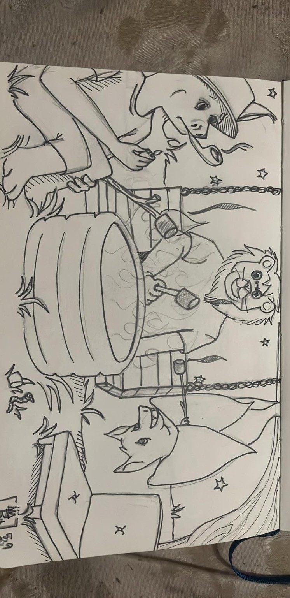
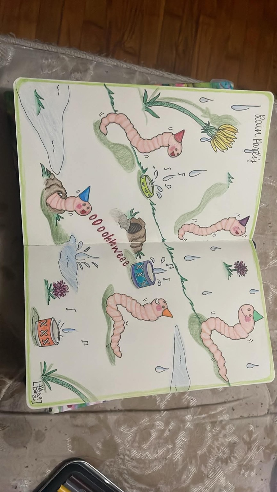

After-Dark CampfireFlint, Michigan • Tattoo Artist • Illustrator
Two drawings. One unmistakable world.
Britney Rosa turns cartoon instinct into tattoo-ready storytelling: strange little creatures, gentle chaos, expressive linework, and personal art that feels alive before it ever touches skin.

Rain ParadeArtist position
Cartoon is not lesser art. It is memory with a face. It is comfort, humor, weirdness, grief, nostalgia, and joy simplified until the feeling becomes readable.
Britney’s work belongs in the space between sketchbook intimacy and permanent design: personal enough to feel handmade, clean enough to become a tattoo, and strange enough to be remembered after the room moves on.
Two-piece showcase
The museum wall treatment, because confidence apparently has to be staged.
We do not apologize for only having two drawings. We curate them. We frame them. We make people slow down and actually look, a miracle in the age of thumb-scrolling goblin behavior.
01
After-Dark Campfire
Ink sketch / fantasy cartoon study / tattoo-world seed
A moonlit cartoon gathering built with storybook tension: soft creatures, a campfire, bats, stars, and that perfectly odd feeling of being invited into a bedtime story that might bite your ankle.
- Strong tattoo-flash potential through readable silhouettes.
- Expressive character language with nostalgic cartoon warmth.
- Fantasy scene-building that can expand into sleeves, flash sheets, or prints.
02
Rain Parade
Colored sketch / character rhythm / whimsical flash direction
A tiny parade of worm-like characters moving through rain, drums, flowers, puddles, and soft color. It is funny, tender, odd, and instantly brandable. A small world, which is usually where the good monsters live.
- Clear character repetition without feeling copied.
- Soft color palette that supports stickers, flash, and merch.
- Playful movement that translates naturally into small tattoos.
CARTOON
TATTOO
STORYTELLING
TATTOO
STORYTELLING
Professional specialty
What Britney should be known for
Custom cartoon tattoos
Creatures, characters, pets, objects, inside jokes, fantasy scenes, and personal symbols made cleaner, cuter, stranger, and tattoo-ready.
Illustrative flash
Original repeatable designs with charm, movement, and clean readability: the kind people recognize across the room.
Soft weirdness with polish
Playful without being disposable. Personal without being messy. Professional without sanding off the soul, which is usually where branding goes to die.
Make it easy for her to get out there
Launch plan: quiet confidence, no begging, no cringe.
Post the two drawings as a mini-series
Frame them as the start of Britney’s cartoon tattoo world: “Two sketches. Two moods. One direction.”
Invite easy inquiries
Use low-pressure wording: “Send me your creature, cartoon, pet, object, or weird little idea.”
Create 6 small flash pieces next
Worm, bat, moon, tiny drum, flower, campfire creature. Build the world from the drawings already here.
Use Flint as a strength
Local, handmade, personal, approachable. Not sanitized. Not generic. Flint has earned better art than beige rectangles with logos on them.
Britney Rosa
Cartoon tattoos for people who want their story drawn with a pulse.
Flint, Michigan • Tattoo Artist • Illustrator • Custom cartoon work • Flash • Character-driven tattoos